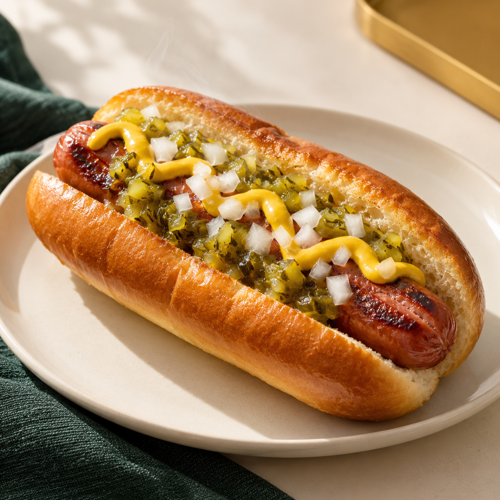
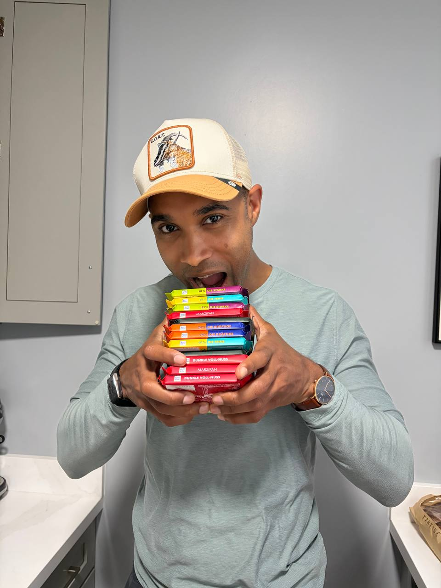

Taste and quality earn the room.
San Francisco gourmet dogs
Made unusually well.
Familiar food. 100% organic grass-fed beef. Made mostly with organic ingredients. A tasting experience worth talking about.

Our brand
Good food makes room for fellowship.
DogOnJohns begins with gourmet dogs made unusually well. Around them, people gather, laugh, talk and stay a little longer.
Conversation can be playful or meaningful. No one has to perform. The food opens the table; fellowship is what grows around it.
Meet the founder
John built an open table.

John grew up on the north side of Minneapolis, Minnesota and attended private school on scholarship. Moving between those worlds taught him how quickly people place one another into boxes.
His interests cross business and technology; art and interior design; psychology and faith; civil and disability rights; fine wine and exceptional food. No single label explains him.
San Francisco showed John a city shaped by people who resisted old assumptions. DogOnJohns turns a familiar pleasure into common ground where complex people can meet without being flattened.
Read John’s full storyWe name what we source and make.
Break boxes. Keep conversation generous.
Bring DogOnJohns
Good food people remember. A brand they want to share.
EventsCorporate gatheringsPop-upsThe Reserve custom dog
A sneak peek into DogOnJohns
The questions behind the dogs.
John built DogOnJohns from a life spent moving between worlds: North Minneapolis, Minnesota; scholarship classrooms; business and technology; art; faith and food. The questions make room for the same complexity in everyone else.
Read John’s full storyWhat is something you changed your mind about this year—and what changed it?
Answer lightly, answer deeply or pass. The invitation is optional; the welcome is not.